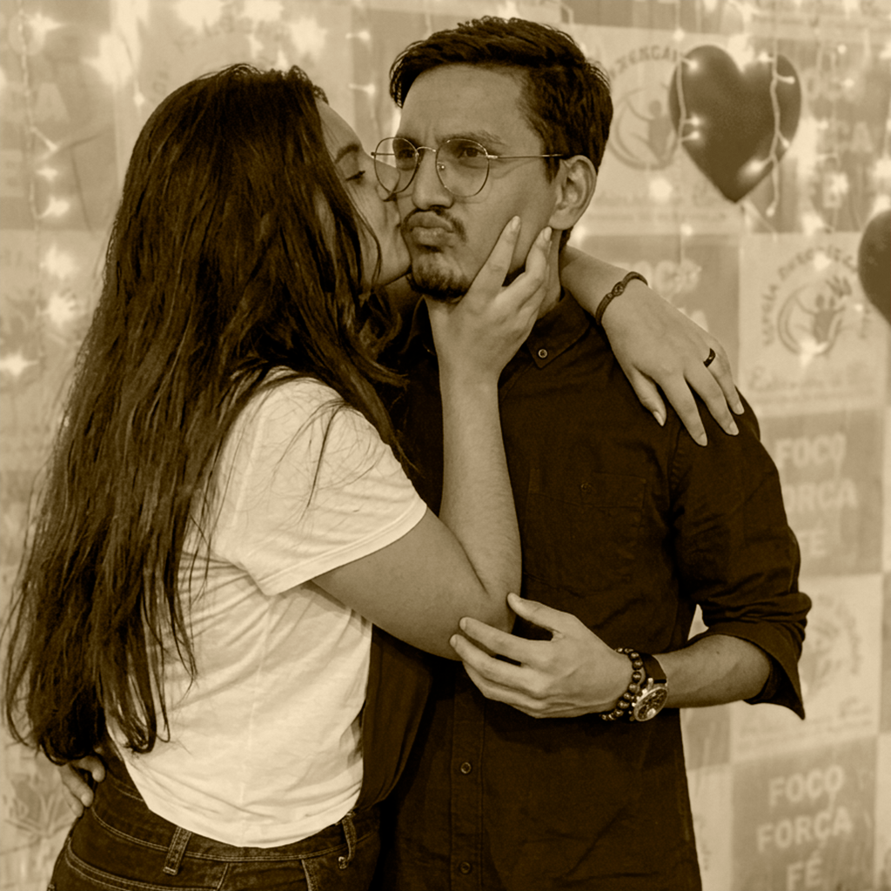
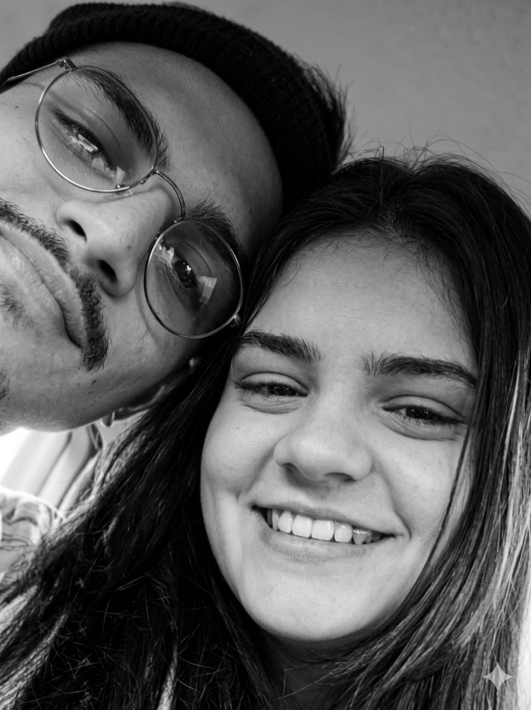
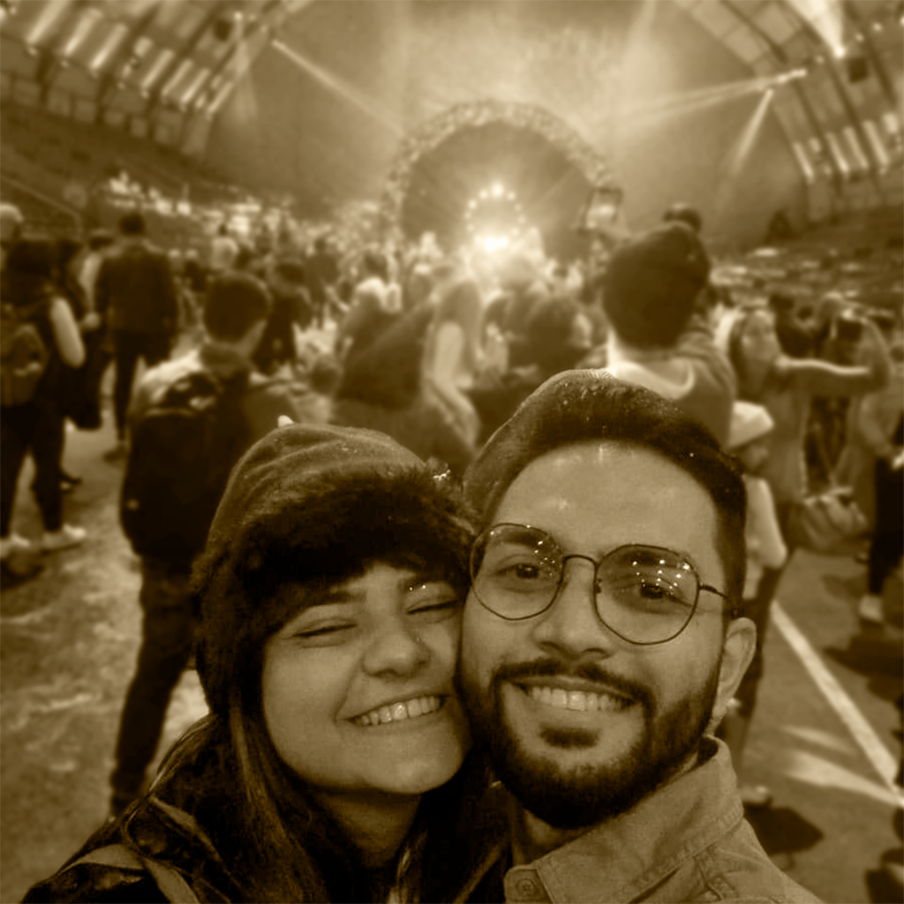
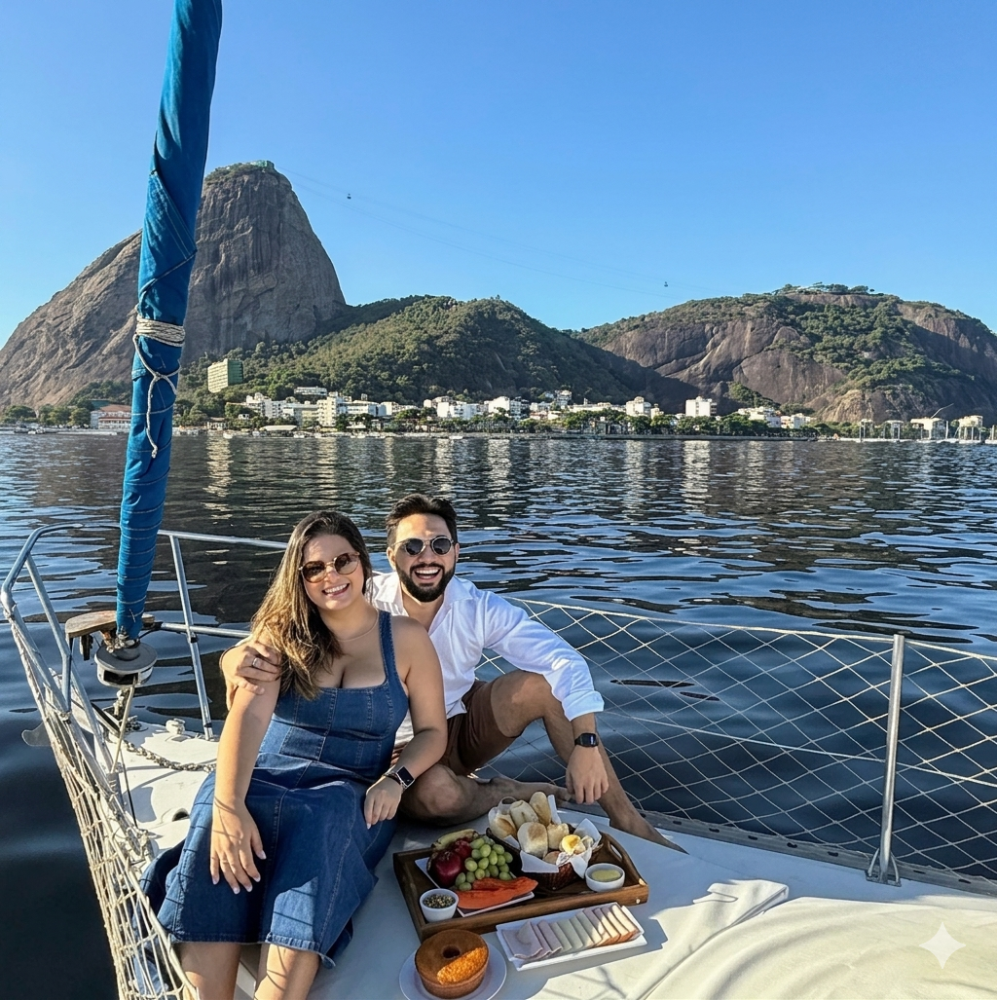

Nossa história começou em 2006. Nos conhecemos ainda crianças, na mesma igreja, no ministério infantil. Naquela época, não éramos próximos — nossas interações se resumiam a implicâncias, puxões de cabelo e muitas provocações.

2019
Em 2019, depois de músicas compartilhadas e stories respondidos, começamos a nos aproximar de verdade. Após encontros no McDonald's e beijos atrapalhados, decidimos caminhar juntos. Nos apaixonamos, crescemos e aprendemos muito lado a lado.

2021
Após 1 ano e 9 meses juntos, nossas diferenças falaram mais alto e seguimos caminhos distintos. Mesmo separados, continuamos frequentando a mesma igreja, nos encontrando semana após semana — ainda que em completo silêncio.

2023
Deus, no entanto, tinha os Seus planos. Em 2023, em uma conversa simples e sincera, voltamos a nos falar. Com mais maturidade e uma nova forma de enxergar a vida, recomeçamos — ou como gostamos de dizer, iniciamos algo totalmente novo, com o coração voltado para o futuro.

2025
Em 2025, demos mais um passo importante: o noivado. Em um momento inesquecível, a bordo de um veleiro na Marina da Glória, tão perfeito quanto sempre sonhamos, iniciamos oficialmente um novo capítulo de nossas vidas.
Agora, estamos prontos para o nosso maior “sim”, cheios de gratidão, amor e expectativa pelo que está por vir.

 Nossa história
Nossa história